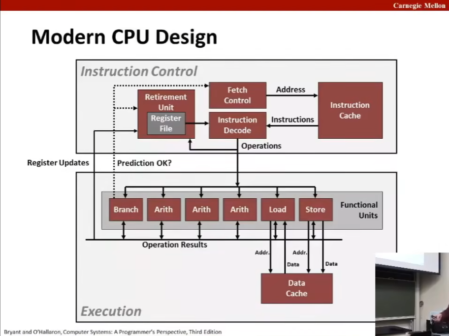
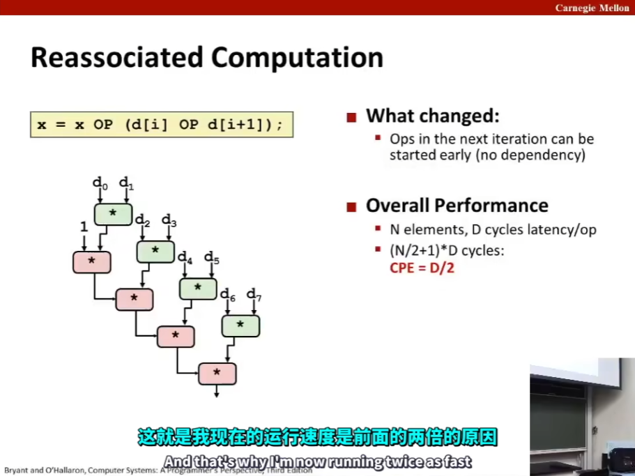

L10 Program Optimization
Source: https://www.bilibili.com/video/BV1iW411d7hd?p=10
Today
预览 Overview
通用有用的优化方法 Generally Useful Optimizations
指令移动/预计算 Code motion/precomputation
减少计算量 Strength reduction
共用子表达式 Sharing of common subexpressions
去除不必要的过程调用 Removing unnecessary procedure calls
优化的障碍 Optimization Blockers
过程调用 Procedure calls
内存别名 Memory aliasing
利用指令级并行 Exploiting Instruction-Level Parallelism
处理条件判断 Dealing with Conditionals
表现的现实 Performance Realities
There's more to performance than asymptotic complexity
常数因子也很重要！Constant factors matter too!
Easy see 10:1 performance range depending on how code is written
Must optimize at multiple levels
algorithm, data representations, procedures, and loops
Must understand system to optimize performance
How programs are compiled and executed
How modern processors + memory systems operate
How to measure program performance and identify bottlenecks
How to improve performance without destroying code modular generality
Optimizing compilers
Provide efficient mapping of program to machine
register allocation
code selection and ordering (scheduling)
dead code elimination
eliminating minor inefficiencies
Don't (usually) improve asymptotic efficiency
up to programmer to select best overall algorithm
big-O savings are (often) more important than constant factors
but constant factors also matter
Have difficulty overcoming "optimization blockers"
potential memory aliasing
potential procedure side-effects
Limitations of Optimizing Compilers
Operate under fundamental constraint
Must not cause any change in program behavior
Except, possibly when program making use of nonstandard language features
Often prevents it from making optimizations that would only affect behavior under pathological conditions
Behavior that may be obvious to the programmer can be obfuscated by languages and coding styles
e.g. Data ranges may be more limited than variable types suggest
Most analysis is performed only within procedures
Whole-program analysis is too expensive in most cases
Newer versions of GCC do interprocedural analysis within individual files
But, not between code in different files
Most analysis is based only on static information
Compiler has difficult anticipating run-time inputs
When in doubt, the compiler must be conservative
通用有用的优化方法
无论什么处理器和编译器，无论是你还是编译器都应该做的
代码移动 Code Motion
Reduce frequency with which computation performed
If it will always produce same result
Especially moving code out of loop
void set_row(double *a, double *b, long i, long n) {
long j;
for (j = 0; j < n; j++)
a[n*i+j] = b[j]
}
void set_row(double *a, double *b, long i, long n) {
long j;
int ni = n*i;
for (j = 0; j < n; j++)
a[ni+j] = b[j]
}
set_row:
testq %rcx, %rcx # Test n
jle .L1 # If , go to done
imulq %rcx, %rdx # ni = n*i
leaq (%rdi,%rdx,8), %rdx # rowp = A + ni*8
movl $0, %eax # j = 0
.L3: # loop:
movsd (%rsi,%rax,8), %xmm0 # t = b[j]
movsd %xmm0, (%rdx,%rax,8) # *rowp = t
addq $1, %rax # j++
cmpq %rcx, %rax # j:n
jne .L3 # if !=, goto loop
.L1: # done:
rep; ret
减少计算量 Reduction in Strength
Replace costly operation with simpler one
Shift, and instead of multiply or divide
16 * x --> x << 4
Utility machine dependent
Depends on cost of multiply or divide instruction
On Intel Nehalem, integer multiply requires 3 CPU cycles
Recognize sequence of products
共用子表达式 Share Common Subexpressions
复用部分表达式 Reuse portions of expressions
GCC will do this with --O1
/* Sum neighbors of i,j */
up = val[(i-1)*n + j ];
down = val[(i+1)*n + j ];
left = val[i*n + j-1];
right = val[i*n + j+1];
sum = up + down + left + right;
leaq 1(%rsi), %rax # i+1
leaq -1(%rsi), %r8 # i-1
imulq %rcx, %rsi # i*n
imulq %rcx, %rax # (i+1)*n
imulq %rcx, %r8 # (i-1)*n
addq %rdx, %rsi # i*n+j
addq %rdx, %rax # (i+1)*n+j
addq %rdx, %r8 # (i-1)*n+j
优化后
long inj = i*n+j
up = val[inj - n];
down = val[inj + n];
left = val[inj - 1];
right = val[inj + 1];
sum = up + down + left + right;
imulq %rcx, %rsi # i*n
addq %rdx, %rsi # i*n+j
movq %rsi, %rax # i*n+j
subq %rcx, %rax # i*n+j-n
leaq (%rsi,%rcx), %rcx # i*n+n -> i*n and then again
优化的阻碍一：过程调用 Optimization Blocker #1: Procedure Calls
Procedure to Convert String to Lower Case
void lower(char *s) {
size_t i;
for (i = 0; i < strlen(s); i ++)
if (s[i] >= 'A' && s[i] <= 'Z')
s[i] -= 'A' - 'a';
}
Extracted from 213 lab submissions, Fall, 1998
【这里有一个关键问题：循环时调用了 strlen() 而对象 s 发生了变化，所以编译器不敢将字符串长固定为常数，只因它不懂代码，这就导致每次循环都调用该函数，使得效率劣化可观：本应线性的复杂度劣化到了平方级别。】
void lower(char *s) {
size_t i;
size_t len = strlen(s);
for (i = 0; i < len; i ++)
if (s[i] >= 'A' && s[i] <= 'Z')
s[i] -= 'A' - 'a';
}
Why couldn't compiler move strlen out of inner loop?
Procedure may have side effects
Alters global state each time called
Function may not return same value for given arguments
Depends on other paths of global state
Procedure lower could interact with strlen
Warning:
Compiler treats procedure call as a black box
Weak optimizations near them
Remedies:
Use of inline functions
GCC does this with --O1
Within single file
Do your own code motion
size_t lencnt = 0;
size_t strlen(const char *s) {
size_t length = 0;
while (*s != 0) {
s++; length++;
}
lencnt += length;
return length;
}
比如说在多文件中使用这种自己写的同名函数，使用这种和库函数有差异的函数，在链接之前（编译在链接之前！！）根本无法区分，编译器自然只能将函数当成黑盒，而不敢轻易优化篡改之。
内存很重要 Memory Matters
/* Sum rows is of n X n matrix a and store in vector b */
void sum_rows1(double *a, double *b, long n) {
long i, j;
for (i = 0; i < n; i++) {
b[i] = 0;
for (j = 0; j < n; j++)
b[i] += a[i*n + j];
}
}
# sum_rows1 inner loop
.L4:
movsd (%rsi,%rax,8), %xmm0 # FP Load
addsd (%rdi), %xmm0 # FP add
movsd %xmm0, (%rsi,%rax,8) # FP store
addq $8, %rdi
cmpq %rcx, %rdi
jne .L4
code updates b[i] on every iteration
Why couldn't compiler optimize this away?
内存别名 Memory Aliasing
别名：当程序的不同部分指向内存中的相同位置，称其为别名
C 编译器很难快速得知是否有内存别名引用
double A[9] =
{ 0, 1, 2,
4, 8, 16,
32, 64, 128 };
double *B = A + 3;
sum_rows1(A, B, 3);
移除别名 Removing Aliasing
/* Sum rows is of n X n matrix a and store in vector b */
void sum_rows1(double *a, double *b, long n) {
long i, j;
for (i = 0; i < n; i++) {
double val
for (j = 0; j < n; j++)
val += a[i*n + j];
b[i] = val;
}
}
可能你没看懂，因为这个例子并不是为了说明正确计算，B 的内存重叠本身就会导致计算很难正确。
这个例子是说明在存在别名的情况下，进行计算需要很多内存操作，以保证别名的正确，而我们往往会被这种别名的繁复计算给拖累。编译器不知道你用别名是不小心的还是故意的，所以就没有优化。
Optimization Blocker: Memory Aliasing
Aliasing
Two different memory references specify single location
Easy to have happen in C
Since allowed to do address arithmetic
Direct access to storage structures
Get in habit of introducing local variables
Accumulating within loops
Your way of telling compiler not to check for aliasing
利用指令级别并行 Exploiting Instruction-Level Parallelism
需要比较理解现代处理器设计 Need general understanding of modern processor design
硬件可以并行执行多个指令 Hardware can execute multiple instructions in parallel
表现会受限于数据依赖 Performance limited by data dependencies
简单的变形可以得到巨大表现提升 Simple transformations can yield dramatic performance improvement
编译器通常不会做这些变形 Compilers often cannot make these transformations
浮点数计算不满足结合律和分配律 Lack of associativity and distributivity in floating-point arithmetic
Benchmark Example: Data Type for Vectors
/* data structure for vectors */
typedef struct {
size_t len;
data_t *data;
} vec;
/* retrieve vector element and store at val */
int get_vec_element(*vec v, size_t idx, data_t *val) {
if (idx >= v->len)
return 0;
*val = v->data[idx];
return 1;
}
基准计算 Benchmark Computation
void combine1(vec_ptr v, data_t *dest) {
long int i;
*dest = IDENT;
for (i = 0; i < vec_length(v); i++) {
data_t val;
get_vec_element(v, i, &val);
*dest = *dest OP val;
}
}
注：此处 OP 是一个运算，可以是加法或乘法等等，IDENT 则表示该运算的单位元（identity），与之对应为 0 或 1 等等。
进行一些基本的优化：
void combine4(vec_ptr v, data_t *dest) {
long i;
long length = vec_length(v);
data_t *d = get_vec_start(v);
data_t t = IDENT;
for (i = 0; i < length; i++)
t = t OP d[i];
*dest = t;
}
处理单个元素的所花的时间周期 Cycles Per Element (CPE)
Convenient way to express performance of program that operates on vector or lists.
T = CPE * n + Overhead. 教授给出了如下表格：
| Method\CPE | Integer | - | Double FP | - |
|---|---|---|---|---|
| Operation | Add | Mult | Add | Mult |
Combine1 unoptimized |
22.68 | 20.02 | 19.98 | |
Combine1 with --O1 |
10.12 | 10.12 | 10.17 | 11.14 |
Combine4 |
1.27 | 3.01 | 3.01 | 2.01 |
现代中央处理器（CPU）设计 Modern CPU Design
相关细节专业知识可参考课程 ECE 741（下图结构大致是 1995 年的）

CPU 处理指令采用了一种称作超标量乱序执行（superscalar out of order execution）的技术，这种技术可以简单地理解为 CPU 尽可能读取更多的指令，并且尽量同时（并行）执行、计算，这被称为指令级并行性（instruction level parallelism）。
超标量处理器 Superscalar Processor
Definition: A superscalar processor can issue and execute multiple instructions in one cycle. The instructions are retrieved from a sequential instruction stream and are usually scheduled dynamically.
Benefit: without programming effort, superscalar processor can take advantage of the instruction level parallelism that most programs hvae.
Most modern CPUs are superscalar.
Intel: since Pentium (1993)（奔腾）
流水线功能单元 Pipelined Functional Units【DLCO 的流水线历历在目】
long mult_eg(long a, long b, long c) {
long p1 = a*b;
long p2 = a*c;
long p3 = p1*p2;
return p3;
}
| Time | - | - | - | - | - | - | - |
|---|---|---|---|---|---|---|---|
| 1 | 2 | 3 | 4 | 5 | 6 | 7 | |
| Stage 1 | a*b |
a*c |
p1*p2 |
||||
| Stage 2 | a*b |
a*c |
p1*p2 |
||||
| Stage 3 | a*b |
a*c |
p1*p2 |
Divide computation into stages
Pass partial computations from stage to stage
Stage i can start on new computation once values passed to i+1
e.g. complete 3 multiplications in 7 cycels even though each requires 3 cycels.
Haswell CPU
8 Total Functional Units
Multiple instructions can execute in parallel
2 load, with address computation
1 store, with address computation
4 integer
2 FP multiply
1 FP add
1 FP divide
Some instructions take > 1 cycle, but can be pipelined
Instruction Latency Cycles/Issue
Load/Store 4 1
Integer Multiply 3 1
Integer/Long Divide 3-30 3-30
Single/Double FP Multiply 5
Single/Double FP Add 3
Single/Double FP Divide 3-15
Haswell 是 Intel x86 系列的最新版本之一【此视频时间为 2015 年】，Latency：延迟，Cycle/Issue：表示两个指令阶段之间的距离，如表所示，除法没有流水线，效率相当低。
x86-64 Compilation of Combine4
# Inner Loop (Case: Integer Multiply)
.L519: # Loop:
imull (%rax,%rdx,4), %ecx # t = t * d[i]
addq $1, %rdx # i++
cmpq %rdx, %rbp # Compare length:i
jg .L519 # if >, go to Loop
| Method | Integer | - | Double FP | - |
|---|---|---|---|---|
| Operation | Add | Mult | Add | Mult |
Combine4 |
1.27 | 3.01 | 3.01 | 5.01 |
| Unroll 2*1 (Shown as Following) | 1.01 | 3.01 | 3.01 | 5.01 |
| Unroll 2*1a (Shown as Following) | 1.01 | 1.51 | 1.51 | 2.51 |
| Unroll 2*2 (Shown as Following) | 0.81 | 1.51 | 1.51 | 2.51 |
| Latency Bound | 1.00 | 3.00 | 3.00 | 5.00 |
| Throughput Bound | 0.50 | 1.00 | 1.00 | 0.50 |
循环展开技术 Loop Unrolling (2*1)
void unroll2a_combine(vec_ptr v, data_t *dest) {
long length = vec_length(v);
long limit = length-1;
data_t *d = get_vec_start(v);
data_t x = IDENT;
long i;
/* Combine 2 elements at a time */
for (i = 0; i < limit; i+=2) {
x = (x OP d[i]) OP d[i+1];
}
/* Finish any remaining elements */
for (; i < length; i++) {
x = x OP d[i];
}
*dest = x;
}
循环展开的基本思想是在一次循环中计算多个值而不是一个值，这样可以减少计数和分支预测错误的代价。
Helps integer add
Achieves latency bound
Others don't improve. Why?
Still sequential dependency
循环展开+重新加括号 Loop Unrolling with Reassociation (2*1a)
将 unroll2a_combine() 改为 unroll2aa_combine() 其中 x = (x OP d[i]) OP d[i+1]; 改为 x = x (OP d[i] OP d[i+1]);
左侧的图称为数据流图。此时两个 d[?] 计算不依赖 x，这使得代码可以并行计算，从而计算时间减半。
注意！这种操作对于浮点数有风险，因为浮点数计算不满足结合律，不过如果不考虑舍入、精度什么的，那也可以用这种优化，另外编译器也正是因为这个原因，对于浮点数计算的优化非常保守，在浮点数相关计算的时候，你最好手动优化。

延迟界限（latency bound）：在一系列操作必须严格顺序执行时，执行一条指令所要花费的全部时间。
吞吐量界限（throughput bound）基于硬件的数量和性能、基于功能单元的原始计算能力，所以你在表中看到浮点数乘法的吞吐量界限更小，是因为我们之前展示的 Haswell CPU 有两个浮点数乘法单元，但只有一个浮点数加法单元。
void unroll2a_combine(vec_ptr v, data_t *dest) {
long length = vec_length(v);
long limit = length-1;
data_t *d = get_vec_start(v);
data_t x0 = IDENT;
data_t x1 = IDENT;
long i;
for (i = 0; i < limit; i += 2) {
x0 = x0 OP d[i];
x1 = x1 OP d[i+1];
}
for (; i < length; i++) {
x0 = x0 OP d[i];
}
*dest = x0 OP x1;
}
这种循环展开相当于显式地并行。
循环展开和累计 Unrolling & Accumulating
Idea
Can unroll to any degree L
Can accumulate K results in parallel
L must be multiple of K
Limitations
Diminishing returns
Cannot go beyond throughout limitations of execution units
Large overhead for short lengths
Finish off iterations sequentially
Case
Intel Haswell
Double FP Multiplication
Latency boud: 5.00. Throughput bound: 0.50
| FP Mult | Unrolling FactorL | - | - | - | - | - | - | - |
|---|---|---|---|---|---|---|---|---|
| K | 1 | 2 | 3 | 4 | 6 | 8 | 10 | 12 |
| 1 | 5.01 | 5.01 | 5.01 | 5.01 | 5.01 | 5.01 | 5.01 | |
| 2 | 2.51 | 2.51 | 2.51 | |||||
| 3 | 1.67 | |||||||
| 4 | 1.25 | 1.26 | ||||||
| 6 | 0.84 | 0.88 | ||||||
| 8 | 0.63 | |||||||
| 10 | 0.51 | |||||||
| 12 |
基本上极限是吞吐量界限，当然之后你必须考虑的瓶颈就变成了一些额外的准备开销而不只是 CPE.
我们之前谈过 SSE，现在来谈谈 AVX，其使用 YMM 寄存器作为浮点数寄存器而不是 XMM 寄存器，其大小是后者的两倍，Intel 还打算（视频时间为 2015 年）在一年内推出新的 AVX512 版本，其寄存器为 512 位，长度为 64 字节，是 YMM 寄存器的两倍长。
Programming with AVX2
YMM Registers
16 total, each 32 bytes
32 single-byte integers
16 16-bit integers
8 32-bit integers
8 single-precision floats
4 double-precision floats
1 single-precision float
1 double-precision float
vaddsd %ymm0, %ymm1, %ymm1
vaddpd %ymm0, %ymm1, %ymm1
等新的矢量运算指令也被添加了。
使用矢量指令 Using Vector Instructions
| Method\CPE | Integer | - | Double FP | - |
|---|---|---|---|---|
| Operation | Add | Mult | Add | Mult |
| Scalar Best | 0.54 | 1.01 | 1.01 | 0.52 |
| Vector Best | 0.06 | 0.24 | 0.25 | 0.16 |
| Latency Bound | 0.50 | 3.00 | 3.00 | 5.00 |
| Throughput Bound | 0.50 | 1.00 | 1.00 | 0.50 |
| Vec Throughput Bound | 0.06 (0.0625) | 0.12 | 0.25 | 0.12 |
Make use of AVX Instructions
Parallel operations on multiple data elements
See Web Aside OPT: SIMD on CS: APP web page
这种浮点数的快速运算是因为软件，特别是游戏需要渲染，其中关于图像、运动处理等等用到了大量浮点数运算，这样一种需求。GCC 曾想尝试让这种优化在编译器内完成，但效果都不好，所以最终是交给了下游的硬件和上游的代码编写者去处理。
此处的网页旁注，就是提示你如何打开向量（矢量）化编程这个领域的大门以及 GCC 当年扩展的尝试。
What About Branches?
Challenge
Instruction Control Unit must work well ahead of Execution Unit to generate enough operations to keep EU busy.
When encounters conditional branch, cannot reliably determine where to continue fetching.
Branch Taken: Transfer control to branch target
Branch Not-Taken: Continue with next instruction in sequence.
Cannot resolve until outcome determined by branch/integer unit.
分支预测技术 Branch Prediction【此项优化技术在 DLCO 中亦有提及，称作分支预测技术。流水线技术、分支预测技术、预测表、流水线冲刷……】
Idea
Guess which way branch will go
Begin executing instructions at predicted position
But don't actually modify register or memory data
Branch Prediction Through Loop, Branch Misprediction Invalidation, Branch Misprediction Recovery
（这项技术最关键的一点就是，在这个过程中仅使用寄存器，并且机器留有寄存器的备份，这样预测错误就可以丢掉所有已取的指令，回退所有部分/全部计算完毕的指令，接着继续进行下去。寄存器备份的地方叫做寄存器重命名块（register renaming unit），寄存器备份的数量有几百个之多）
条件跳转（conditional jump）和条件分支（conditional operation）的区别（书 P145），条件跳转可以在流水线中进行，即使用如上所述的优化技术，而条件分支代码则是更高一级，在编程级别的抽象，与之不可混淆。
Getting High Performance
Good compiler and flags
Don't do anything stupid
Watch out for hidden algorithmic inefficiencies
Write compiler-friendly code
Watch out for optimization blockers: procedure calls & memory references
Look carefully at innermost loops (where most work is done)
Tune code for machine
Exploit instruction-level parallelism
Avoid unpredictable branches
Make code cache friendly (Covered later in course)